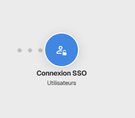
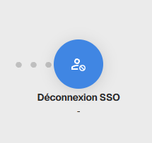

SSO
Available from the Enterprise plan
Introduction
Single Sign-On (SSO) lets users sign in to Zyllio using their usual login credentials. This secure method centralizes access management and simplifies the user experience.
Definitions
- Identity Provider (the client system): The platform that manages user identities (for example: Microsoft Entra ID/Azure, Okta, Google Workspace). It authenticates the user before sending them to Zyllio.
- Service Provider (Zyllio): The final application that provides the service. Zyllio trusts the information sent by the client system.
- Metadata: An XML file or text that contains the certificates and settings required to establish a secure link between the client system and Zyllio.
Configuration procedure
Activation
The first step is to turn on the Enable switch. This action unlocks the configuration fields and allows Zyllio to process SAML2 login requests.
Declaring Zyllio in the client system
For the client system to accept connecting users to Zyllio, it must know our application settings:
- Check the Service Provider section on this page.
- Click the DOWNLOAD FILE button to retrieve Zyllio metadata.
- Action: this file must be imported into the client system administration interface to create the link.
Linking the client system to Zyllio
Once the client-side setup is complete, the client system generates its own metadata so that Zyllio can recognize it:
- Retrieve the XML metadata text provided by the client system.
- Paste this text into the field provided under the Identity Provider section.
- Once saved, the configuration is operational.
Deployment tips
- Verification: Perform a login test in a private browsing window to confirm that the flow works correctly.
- Continuity: Make sure an administrator account keeps a standard access method (email/password) while you validate the SSO setup to avoid any accidental lockout.
Security: these files are not "secrets"
Unlike a password or a private API key, the XML metadata files exchanged between the client system and Zyllio are not confidential secrets. Here is why you can handle them without concern:
- A simple ID card: metadata mainly contains public information about the setup, including login URLs, the entity name (EntityID), and public certificates.
- Public certificates vs private keys: The file contains the "public" part of the certificate. It is used only to verify message signatures. The private key, which is the real secret, stays safely on the client system servers and is never transmitted.
- Trust exchange: Intercepting this file does not let anyone sign in on your behalf. The file is only used to create the technical bridge between the two systems.
In short: importing and exporting these files are standard setup procedures. They do not contain any data that can be used to decrypt your passwords or improperly access your data.
Authentication screens
User management
For the login flow to work, Zyllio must know which internal account corresponds to the user signing in through SSO:
- Users table: A users table must be configured in Zyllio.
- Unique identifier: This table must contain an Email column. This email address is used as the matching key: once authentication succeeds on the client side, Zyllio looks up the corresponding user by email and opens their session.
Available actions
Once configured, two actions are available to manage SSO login:
Authentication: Securely signs in the user after verification by the client system.

Logout: Properly ends the user's session in Zyllio.
